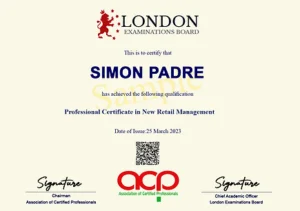

Marketing Management Retailing Customer Sevices Early Childhood Human Resource Management Logistics, Purchasing and SCM Leadership and Strategic Management Education and Tesol
The main aim of the programme is that of providing students with in-depth knowledge and understanding of the system of recording business transactions in an accounting system known as ‘double-entry’. As a result students who successfully complete the course of study will have acquired a solid foundation in bookkeeping principles, practices and routines.
The Level 2 Certificate in Bookkeeping programme provides students with the learning resources they require to build up their knowledge and understanding as they progress through the course and develop the skills necessary to manually record financial transactions in a bookkeeping system, check the accuracy of their work and prepare basic controls, statements, and reports.
The technical knowledge, understanding and skills students acquire are transferable and suitable to support them in further study and a range of job roles within accountancy and finance.
The programme have three major sections with a total of 16 lessons and an assessment at the end of each lesson. The obtained lesson scores are converted into a 100 percent marking and shall be computed cumulatively into the standard grading system of distinction, merit, pass or fail. All tasks, whether knowledge based or skills based (an application of knowledge and understanding), are marked numerically.
The Table below sets out the grading classification bands: Standard Delivery Mode The Level 2 Certificate in Bookkeeping programme is delivered on a self-study basis, which means that students enjoy the advantage of complete flexibility, they tailor the course of study to suit themselves and are able to learn at their own pace and at a time and place that suits their personal and work life.
There shall be a monthly intake or commencement that allows flexibility where students can complete the programme at any time within the duration of the programme. Immediately following enrolment to the programme students are provided with direct access to
. The study resources provided cover all the learning outcomes and assessment criteria within the qualification specification and are designed to lead students, step-by-step, through the programme. It is anticipated that for the majority of students the programme duration will be in the range of three to six months.
Although the Level 2 Certificate qualification is open to students of any age the programme is specifically aimed at young adults wishing to study accountancy and looking to embark on a career in accountancy or finance, or already in the early stages of a career in accountancy and finance and wanting to enhance their promotion prospects.
There are no prerequisites to entry to the course although it is advisable that in order to fulfil and benefit from the objectives of the programme of study prospective students are able to demonstrate a good level of literacy (English and numeracy).
Central to the philosophy of the Level 2 Qualification programme is the goal of preparing students for the world of work. The interactive on-going assessments make use of a range of techniques intended to encouraging initiative, as well as developing the students ability to apply the knowledge and skills acquired during the learning process.
Assessments are structured to enable appraisal of student performance in terms of: Their progression through the programme How well they have met the programme learning outcomes and assessment criteria
The programme have three major sections with a total of 16 lessons and an assessment at the end of each lesson. The obtained lesson scores are converted into a 100 percent marking and shall be computed cumulatively into the standard grading system of distinction, merit, pass or fail. All tasks, whether knowledge based or skills based (an application of knowledge and understanding), are marked numerically.
The Table below sets out the grading classification bands: Marks LEB Grade LEB Classification 70% and above A Distinction 60 – 69% B Merit 50 – 59% C Pass 49% and below D Fail Download Brochure
Enquire / Enrol Now